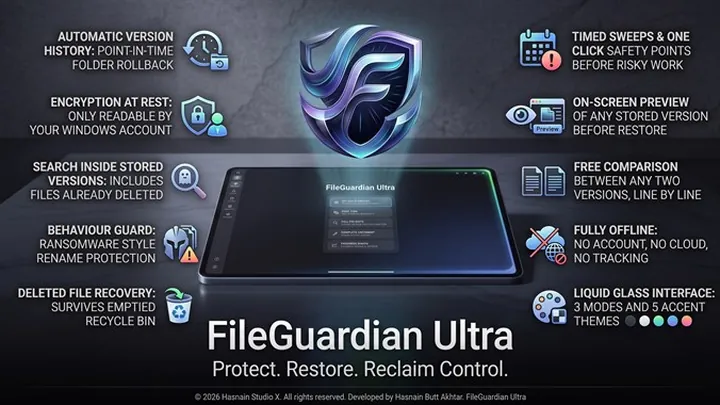

FileGuardian Ultra
Offline file protection and version history
Offline file protection and version history for Windows. Keeps protected copies and earlier versions of your files on your own storage, with no cloud backup involved.
What FileGuardian Ultra does
- Automatic local version history
- Protected copies of important files
- Restore earlier versions on demand
- Files and backups never leave the device
Who it is for
FileGuardian Ultra is built for people moving, converting or archiving files who would rather not route them through someone else’s server.
It sits in the files & transfer part of the Hasnain Studio X catalogue, and it follows the same rule as every other title in the range: the work happens on your own hardware. Nothing is uploaded for processing, because there is no server to upload it to.
Local-first, by design
Most software in this category sends your files somewhere to be handled. FileGuardian Ultra does not. Processing runs on your CPU or GPU, and your files stay in the folders you put them in. The application keeps working with the network switched off.
That is not a setting you enable. It is how the application is built, and it is why there is no account to create, no profile to build and no subscription to lapse. Full detail is in the FileGuardian Ultra privacy policy.
Technical details
- Platform
- Windows 10, Windows 11
- Distribution
- Microsoft Store
- Availability
- Available now
- Licence
- Free trial, then one purchase
- Network required
- No, works offline
- Account required
- None
- Telemetry
- None
- Publisher
- Hasnain Studio X
- Developer
- Hasnain Butt Akhtar
Questions
Does FileGuardian Ultra need an internet connection?
No. FileGuardian Ultra does its work on your own device. You can install it, disconnect, and it keeps functioning. A connection is only used by the store itself, for installation and licence checks.
Does FileGuardian Ultra require an account?
No. There is no registration, no sign-in and no online identity. You install the application and use it.
What data does FileGuardian Ultra collect?
None. There is no analytics SDK, no usage tracking and no crash reporting that leaves your device. The full detail is in the FileGuardian Ultra privacy policy.
Is FileGuardian Ultra a subscription?
No. FileGuardian Ultra is a free trial followed by a one-time purchase through the Microsoft Store. There is no recurring fee.
Which versions of Windows does it support?
Windows 10 and Windows 11.
Related applications
More of the same kind of tool is listed on file transfer, conversion and archiving apps.
Get FileGuardian Ultra
Available now on the Microsoft Store. Try it free, then a single purchase unlocks it for good — no subscription, no account.
Also listed under privacy tools.
FileGuardian Ultra privacy policy · Support and bug reports · Files & transfer apps · Full catalogue
FileGuardian Ultra™ is a trademark of Hasnain Studio X. Hasnain Studio X® is a registered trademark.